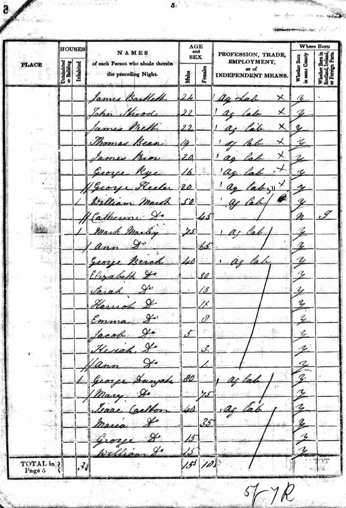
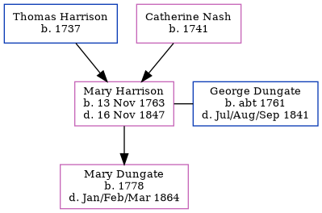

Mary Dungate (née Harrison) 1763 - 1847
[ Home ] | [ Calendar ] | [ Surnames Index ] | [ Family History ]The daughter of Thomas Harrison and Catherine Nash, Mary Harrison, the 5 times great-grandmother of <a href="I1.html">Nigel Horne</a>, was born in Littlebourne, Kent, England on Nov 13, 1763<span class="citation">1,2,3</span>, was baptized in Bekesbourne, Kent, England on Jan 13, 1765 and married George Dungate (with whom she had 1 child, Mary) in Adisham, Kent, England on Sep 2, 1781<span class="citation">5</span>. In 1841, she lived in Adisham<span class="citation">1</span>. <p>She died on Nov 16, 1847 in Littlebourne<span class="citation">4</span> and was buried at Holy Innocents' Church, The Street in Adisham on Nov 21, 1847<span class="citation">6</span>.
Parents
- Thomas was born in 1737
- Catherine was born in 1741
Children
- Mary was born in 1778
Citations
- 1841 England Census Online publication - Provo, UT, USA: The Generations Network, Inc., 2006.Original data - Census Returns of England and Wales, 1841. Kew, Surrey, England: The National Archives of the UK (TNA): Public Record Office (PRO), 1841. Data imaged from the National
- Kent Burials - Findmypast
- Kent, England, Tyler Index to Parish Registers, 1538-1874 Online publication - Provo, UT, USA: Ancestry.com Operations, Inc., 2010. This collection was indexed by Ancestry World Archives Project contributors.Original data - Frank Watt Tyler. The Tyler Collection. Canterbury, Kent, England: The Institute of Herald
- England & Wales, FreeBMD Death Index: 1837-1915 Online publication - Provo, UT, USA: The Generations Network, Inc., 2006.Original data - General Register Office. England and Wales Civil Registration Indexes. London, England: General Register Office. © Crown copyright. Published by permission of the Cont
- England, Select Marriages, 1538–1973 Ancestry.com Operations, Inc.
- Kent Burials - Findmypast
Media
1841 UK Census

Kent Burials - GBPRS/CANT/D/95219068
Family Tree
Generated by Ged2Site. Last updated on Jul 20, 2025